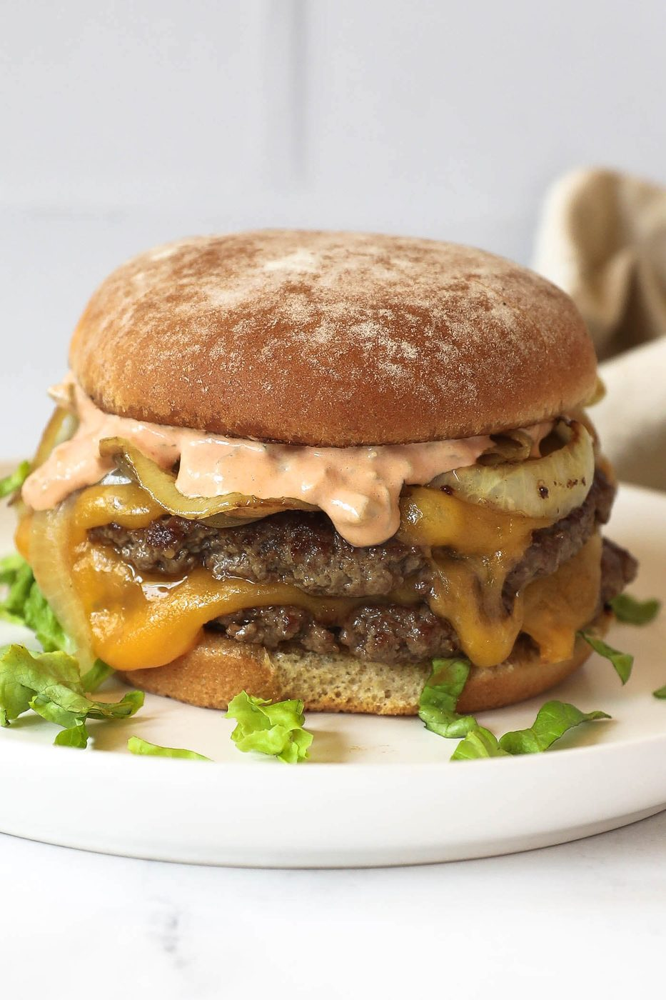
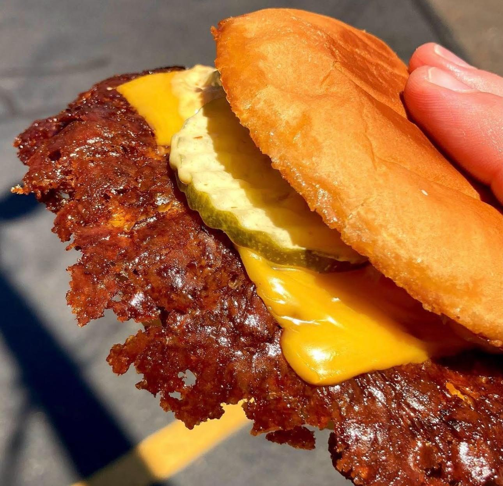
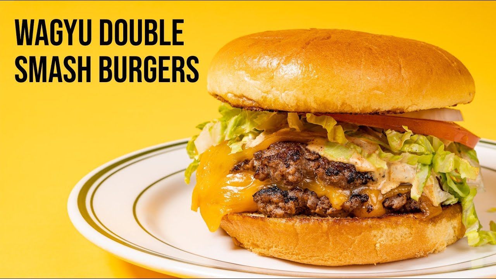
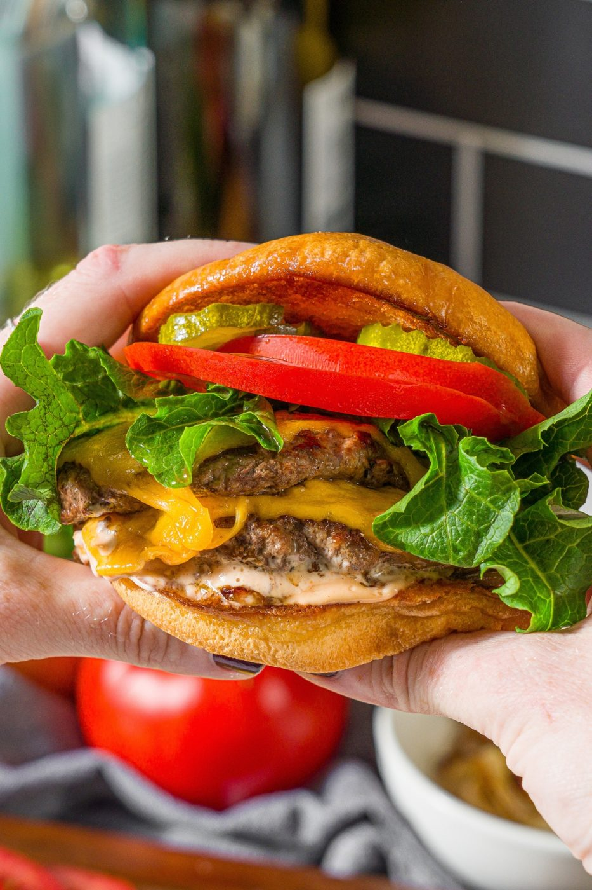
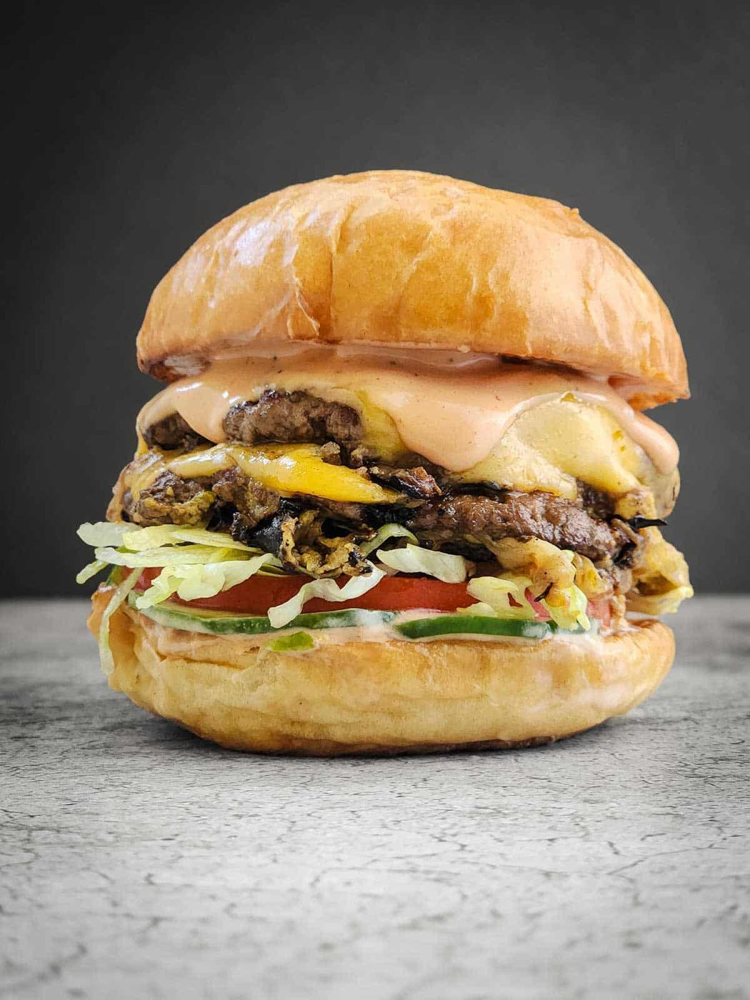
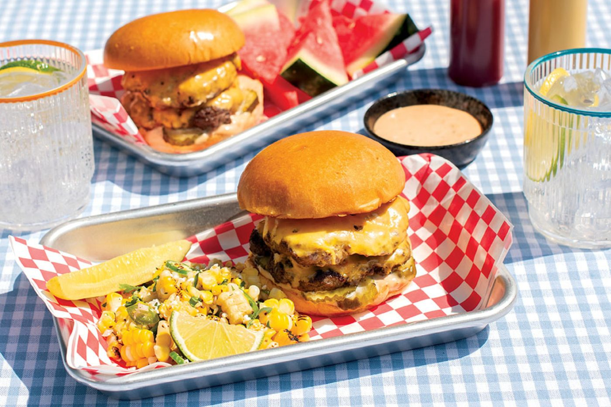
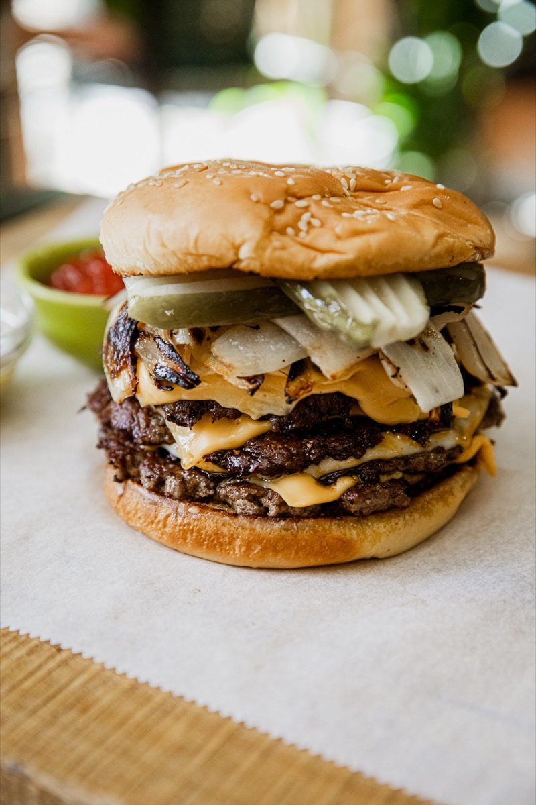

← Street Food
Smash Burger
A ball of beef, a spatula, and the physics of maximum crust. The burger that out-burgered the gourmet burger.
A ball of beef, a spatula, and the physics of maximum crust. The burger that out-burgered the gourmet burger.
The smash burger reverses everything the burger purists told you. Do not handle the meat gently. Do not keep it thick. Do press it — hard — into a screaming hot griddle, where the flattened patty develops a deep brown crust (the Maillard reaction's greatest hits album) in under two minutes. The lacy, caramelized edges are the entire point.
Two rules make it work. First: 80/20 beef, formed into loose balls and seasoned only on the outside — salting early changes the texture. Second: do not press after the first minute. Smash once, hard, with a stiff spatula, then leave it alone while the crust forms. Thin patties mean you stack two for the classic double, and double sauce dripping down your wrist is the standard unit of success.
serves 4 — tick items off as you shop; it saves as you go
Divide beef into 8 loose 100 g balls. Do not compress. Do not season yet. They should look like they were rolled by someone in a hurry.
Cast-iron griddle or heavy skillet on high for 5 minutes until it hisses at a water drop. This is the difference between burger and burger-shaped gray meat.
Two balls per bun. Place on the griddle, smash flat with a stiff spatula (use a second spatula or a can to press) to 5 mm. Salt and pepper now. Never touch it again for 2 minutes.
When the edges are dark and lacy and the top is still red-pink, flip once — crust down is what you cooked for. Immediately lay cheese on, stack the second patty on top of the first's melted cheese.
Butter the cut sides and press them onto the griddle during the patties' final minute. Golden, steaming, slightly greasy — correct.
Sauce on both bun halves, pickles, onions, double patty. Wrap half the burger in paper if you want the authentic grip. The whole thing from skillet to mouth should take under 60 seconds.







Images are web-sourced via image search and self-hosted. Original sources:
https://z-cdn.chatglm.cn/image-search-mcp/images-ppt/089b752e2a56.pnghttps://z-cdn.chatglm.cn/image-search-mcp/images-ppt/41fe087e6ad0.jpghttps://z-cdn.chatglm.cn/image-search-mcp/images-ppt/66b7f2f37c2d.jpghttps://z-cdn.chatglm.cn/image-search-mcp/images-ppt/675fa7213e2e.jpeghttps://z-cdn.chatglm.cn/image-search-mcp/images-ppt/9dd3490f0b36.jpghttps://z-cdn.chatglm.cn/image-search-mcp/images-ppt/a820b5599474.jpghttps://z-cdn.chatglm.cn/image-search-mcp/images-ppt/db4af357c944.jpgVerified working videos — click a card to load the embed.


Powered by GitHub Issues — the backup kitchen. One issue per recipe; your comment lands in the repo.